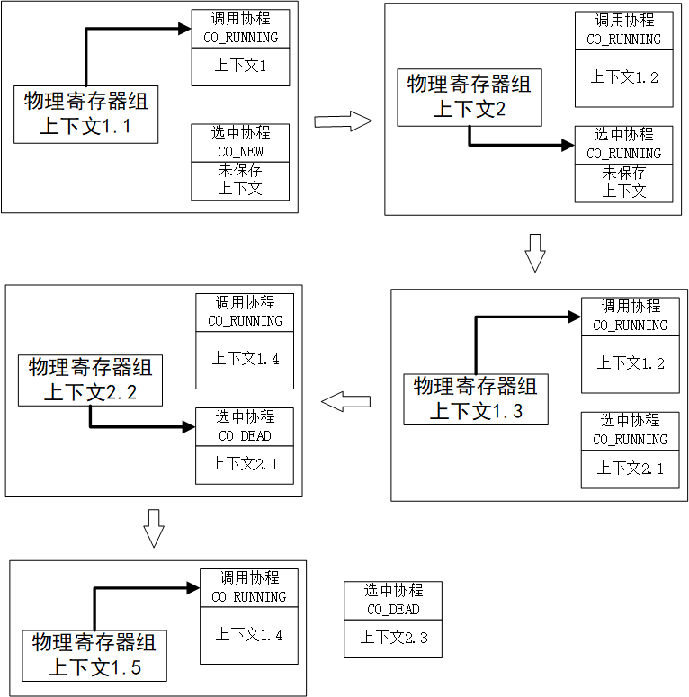
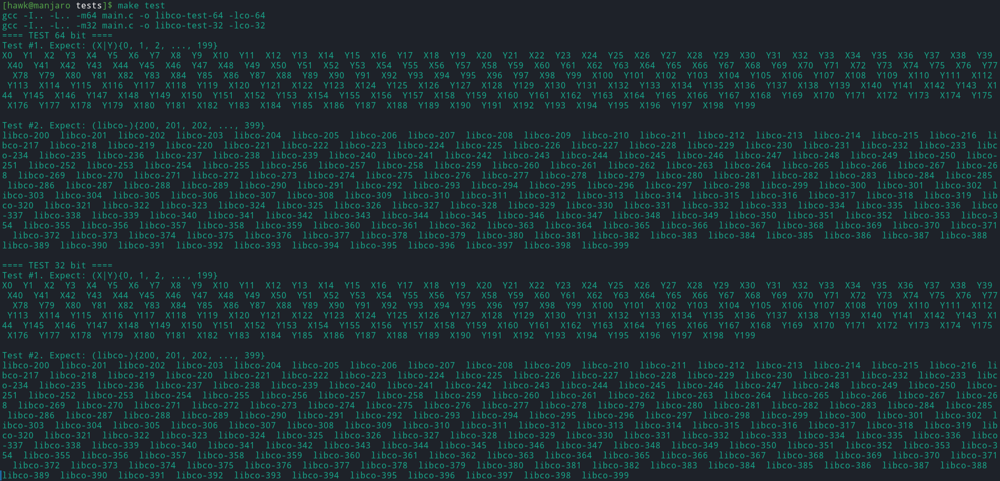

操作系统-设计与实现-三
前言
这一章稍微介绍一下多线程程序存在的问题，以及实现课程中的M2实验
多线程程序存在的问题
这里，我们将使用二段代码，说明多线程程序中存在的各种问题。第一段代码如下所示
1
2
3
4
5
6
7
8
9
10
11
12
13
long sum = 0;
void do_sum() {
for (int i = 0; i < n; i++) sum++;
}
void print() {
printf("sum = %ld\n", sum);
}
int main() {
create(do_sum);
create(do_sum);
join(print);
}
其中，create和join是包装pthread库的函数。
如果我们采用O0优化，即执行gcc -O0，则其输出基本一直是介于100000000到200000000的值;
如果我们采用O1优化，即执行gcc -O1，则其输出基本一直是100000000;
如果我们采用o2优化，即执行gcc -O2，则其输出基本一直是200000000。 可以看到，不同优化等级下，多线程输出的值却各部一样。实际上，这些分别表示了多线程变成中的一些问题
原子性的丧失
实际上，最好理解的是采用O0优化的程序的输出结果:看似sum++是一条原子语句，其执行不可分割。但实际上其仍由包括取值、运算和存值等多个指令构成，并且由于多个线程可以在不同处理器上并行执行，因此这些指令可能随时会在中途被中断，从而导致部分执行自增语句读取的是改变之前的值，从而导致其值变小
顺序的丧失
实际上编译器为了程序性能提升，在进行代码优化的时候，会默认程序只在一个线程(处理器)上执行的顺序语义，这实际上就解释了程序采用O1和O2优化时的输出
对于O1优化，由于sum变量经过连续的写操作，其中间的值不会被读取(单线程下)，并被最后一次的值覆写，因此可以直接被优化成最后一次覆写;并且由于O1下的优化会保留逻辑结构，因此循环仍然被保留，其代码被优化为如下伪代码形式
1 | void do_sum() { |
由于中间循环实际很长，因此第一个执行程序在完成读取操作后，被中断在中间循环处;然后第二个程序同样会完成读取操作….。这样子也就导致了最终数值总是被覆写。
而对于O2优化，其循环被优化掉了，则被优化的伪代码如下
1
2
3
4
5
6void do_sum() {
long tmp = sum;
tmp += n;
sum = tmp;
}
这样子一个时间片内，基本上可以完整的执行整个函数，因此数值不会被覆写掉
可见性的丧失
下面的代码及其结果，可以非常好的展示多线程编程下，程序可见性的丧失
1
2
3
4
5
6
7
8
9int volatile x = 0, y = 0;
void thread1() {
[1] x = 1; // write(x)
[2] ty = y; // read(y)
}
void thread2() {
[3] y = 1; // write(y)
[4] tx = x; // read(x)
}
正常情况下，[2]操作必定在[1]操作之后执行;[4]操作必定在[3]操作之后执行，即最后x或y中，至少应该有一个为1。但实际上，结果中会出现x和y都是0的情况。
其原因在于处理器的乱序执行特性上——当正在执行的指令和下一条待执行的指令没有(单线程下)数据依赖关系时，当当前指令处于Cache Miss时，其会修改指令的执行顺序，去先执行后面的指令，之后在执行当前的指令。
在这个案例中，由于thread1函数x和y是不同的变量，因此其可以进行乱序执行;对于thread2是同理。因此最终会导致意想不到的输出结果
M2协程库(libco)
实验背景
总所周知，每个线程(执行流)都有自己独立的寄存器和堆栈。我们实际上可以在用户空间中模拟多线程——对于堆栈，我们可以使用代码为每个线程分别进行分配;对于寄存器，我们可以将”当前不在执行的线程”的寄存器保存在内存中，然后在这些寄存器现场进行切换即可。
在Python/Javascript中，我们可以使用yield来定义如下的”死循环”函数
1 | def positive_integers(): |
这个函数可以生成所有的整数，并被其他函数使用
1 | def is_prime(i): |
在C语言中，函数调用会从call指令开始，执行到ret指令结束，结束后所有的对于函数的局部数据的访问都是undefined behavior。其会因为无终止的生成所有整数，而导致资源消耗殆尽，最终异常中止
但是对于python来说，positive_integers不会无限地执行下去。当其执行到yield时，positive_integers会暂停执行。之后可以通过next再一次进入positive_integers函数中进行执行，而函数内部的状态i被保存下来，再下一次调用时进行递增
因此，我们希望在C中实现类似的代码，其能够
- 可以被调用，且从头开始运行
- 在运行时，允许被切换出去
之后可以恢复执行，即回到被切换时的状态继续执行
为了能让函数调用被切换，并且之后还可以恢复执行，我们需要在内存中为该函数调用分配寄存器和堆栈(被称为函数调用的上下文，context)，即主动管理上下文切换的协程(coroutine)。
如果我们允许协程在任意时刻被中断并切换到其他协程执行，我们就得到了用户态线程(user-level threads)
实验描述
在该实验中，实现一个轻量级的用户协程(coroutine)，可以在一个不支持线程的操作系统上实现共享内存多任务并发。
实验要求
实验要求实现动态链接库(shared object, .so文件，就像libc，pthread，SDL2等库一样)libc.so，实现以下libco.h中定义的API:
2
3
void co_yield();
void co_wait(struct co *co);链接libco.so的程序被赋予使用协程库的能力，它和pthread相当类似:
co_start(name, func, arg)创建一个新的协程，并返回一个指向struct co的指针(类似于pthread_create)
- 新创建的协程从函数
func开始执行，并传入参数arg。新创建的协程不会立即执行，而是调用co_start的协程继续执行- 使用协程的应用程序不需要知道
struct co的具体定义，因此请把该定义留在co.c中;框架代码中并没有限定struct co结构体的设计，所以可以自由发挥co_wait(co)表示当前协程需要等待，直到co协程的执行完成后才能继续执行(类似于pthread_join)
- 在被等待的协程结束后，
co_wait()返回前，co_start分配的struct co需要被释放。如果你使用malloc()，需要使用free()释放即可- 因此，每个协程只能被
co_wait()一次(使用协程库的程序应当保证除了初始协程外，其他协程都必须被co_wait()恰好一次，否则会造成内存泄漏)- 协程运行后一直在CPU上执行，直到
func函数返回或调用co_yield()使当前运行的协程暂时放弃执行。调用co_yield()会切换到其他协程执行。当系统中有多个可运行的协程时(包括当前协程)，你应当随机选择下一个系统中可运行的协程main()函数的执行也是一个协程，因此可以在main()中调用co_yield()。main()函数返回后，无论有多少协程，进程都将直接终止。协程的使用
下面是一个协程使用的例子，创建了两个(永不结束的)协程，分别打印
a和b。由于co_yield()之后切换到的协程是随机的(可能切换到它自己)，因此可能会看到随机的ab交替出现的序列，例如ababba…
2
3
4
5
6
7
8
9
10
11
12
13
14
15
16
void entry(void *arg) {
while (1) {
printf("%s", (const char *)arg);
co_yield();
}
}
int main() {
struct co *co1 = co_start("co1", entry, "a");
struct co *co2 = co_start("co2", entry, "b");
co_wait(co1); // never returns
co_wait(co2);
}当然，协程有可能会返回，例如在下面的例子(测试程序)中，两个协程会交替执行，共享counter变量
2
3
4
5
6
7
8
9
10
11
12
13
14
15
16
17
18
19
int count = 1; // 协程之间共享
void entry(void *arg) {
for (int i = 0; i < 5; i++) {
printf("%s[%d] ", (const char *)arg, count++);
co_yield();
}
}
int main() {
struct co *co1 = co_start("co1", entry, "a");
struct co *co2 = co_start("co2", entry, "b");
co_wait(co1);
co_wait(co2);
printf("Done\n");
}此时协程明显会正常结束，其输出应该类似下面的结果，b[1] a[2] b[3] b[4] a[5] b[6] b[7] a[8] a[9] a[10] Done，其字母是随机顺序各出现5次
协程和线程
协程和线程的API非常相似。例如threads.h中提供的
2
void join(void (*func)());刚好对应了
co_start()和co_wait()(join会在main返回后，对每个创建的线程调用pthread_join()，依次等待他们结束)。唯一不同的是，线程的调度不是由线程决定的(由操作系统和硬件决定);但协程除非执行co_yield()主动切换到另一个协程运行，当前的代码就会一直执行下去。
协程会在执行co_yield()时主动让出处理器，调度到另一个协程执行。因此，如果能保证co_yield()的定时执行，我们甚至可以在进程里实现线程。这就是很多操作系统教科书上所讲的用户态线程。
协程与线程的区别在于协程是完全在应用程序内(低特权运行级)实现的，不需要操作系统的支持，占用的资源也比操作系统线程更小一些。协程可以随时切换执行流的特性，用于实现状态机、actor model等。前面提到的python语言中的generator，也是一种特殊的协程，其每次co_yield，都会将控制流返回给其调用者，而非本实验的随机选择。
实验指南
整体上，如果我们想随时切换执行流的执行，只需要保存并切换执行流的上下文即可——也就是寄存器和堆栈。
而由于C语言是一个高级语言，其将计算机底层实现细节进行了屏蔽，因此我们需要通过C语言提供的内敛汇编机制，在C中利用汇编语言操作计算机的寄存器和堆栈等数据
编译成动态链接库
本实验要把源文件编译成后缀名为.so的共享库。共享库可以有自己的代码、数据，且可以调用其他的库函数;共享库中全局的符号将能被加载共享库的应用程序调用;共享库不需要入口(main函数)。
一般来说，编译共享库的规则如下
1
2$(NAME)-64.so: $(DEPS)
gcc -fPIC -shared -m64 $(CFLAGS) $(SRCS) -o $@ $(LDFLAGS)
其中，-fPIC、-shared就代表编译成位置无关代码的共享库。除此之外，共享库和普通的二进制文件没有特别的区别。
编写自己的程序链接共享库
实际上，实验文件夹下包含一组协程库的测试用例，包含了编译和运行所需要的脚本，其中的编译选项如下所示
1
2gcc -I.. -L.. -m64 main.c -o libco-test-64 -lco-64
gcc -I.. -L.. -m32 main.c -o libco-test-32 -lco-32
注意到-I和-L选项的使用:
-I选项代表include path，添加寻找程序中通过尖括号引用的头文件的路径-L选项代表增加link search path，添加寻找程序所依赖的动态链接库的路径-l选项代表链接某个库，链接时会自动加上lib的前缀，即-lco-64会依次在库函数的搜索路径中查找libco-64.so和libco-64.a，直到找到为止。在运行时，使用
make test直接运行，它执行的命令是1
LD_LIBRARY_PATH=.. ./libco-test-64
如果不设置
LD_LIBRARY_PATH环境变量，则系统会产生error while loading shared libraries: libco-xx.so: cannot open shared object file: No such file or directory的错误。这里再额外说明以下，为什么动态链接在编译链接和运行时都需要指定动态链接库的位置信息
实际上，编译时指定动态链接库的位置信息，是为了获取动态链接库中的符号表信息，其不仅包含在动态链接库的头文件中，还包含在动态链接库的.so文件中(如未在头文件中声明的非静态全局函数);而运行时指定动态链接库的位置信息，是为了获取动态链接库中的代码信息。
协程切换:分析
正如前面分析的，切换协程时，即保存协程当前的上下文，并载入随机选择的协程上下文。
因此，根据前面的分析，为了实现协程的切换(即co_yield())，实际上需要做的事情是:
- 为每一个协程分配独立的堆栈;堆栈顶的指针由
%rsp/%esp寄存器确定 - 在
co_yield()发生时，将寄存器保存到属于该协程的struct co中 切换到另一个协程执行，找到系统中的另一个协程，然后恢复它
struct co中的寄存器现场实际上，堆栈数据实际上就是栈的数据，其通过
%rsp/%esp寄存器确定，因此保存和恢复寄存器，也就相当于保存和恢复协程的堆栈数据
实现寄存器现场切换
前面已经说过了，C语言作为高级语言，其已经屏蔽了计算机的底层细节，包括寄存器和堆栈等。但我们如果要实现寄存器现场切换，就势必要读、写指定的寄存器。
因此，这里我们需要使用C语言提供的内敛汇编拓展，可以查阅相关参考
这里需要特别说明的是——堆栈对齐
x86-64要求堆栈按照16字节对齐(x86-64的堆栈以8字节为一个单元，这是为了确保SSE指令集中XMM寄存器变量的对齐。如下:
2
movaps %xmm1,0x60(%rsp)
当然，x86-64并不是一直要求堆栈对齐的——在call指令之时按16字节对齐;在call指令之后没有特殊要求
每当co_yield()发生时，我们都会选择一个协程继续执行，此时必定为以下两种情况之一:
- 选择的协程是新创建的，此时该协程还没有执行过任何代码。则我们首先需要创建该协程的上下文数据，然后切换上下文数据即可。
- 选择的协程是调用
co_yield()切换出来的，此时直接切换上下文数据即可
实现协程
实际上，协程中最重要的就是setjmp/longjmp，其用于保存寄存器现场/恢复寄存器现场，可以模拟操作系统中的上下文切换。可以详细阅读相关样例
在参考实现中，我们需要维护一个当前运行的协程的指针(类似于操作系统中，为每一个CPU维护一个当前运行的进程)，如下所示
1
struct co *current;
这样，在co_yield()中，我们进行切换上下文现场时就非常方便，只需要将当前的上下文重新保存到current指向的协程结构中，并且重新指向待切换协程的上下文，并恢复该上下文即可。如下所示
1
2
3
4
5
6
7
8void co_yield() {
int val = setjmp(current->context);
if(val == 0) {
//此时上下文为未切换前的协程
}else {
//此时上下文为切换后的协程
}
}
根据man 3 setjmp可知，setjbmp()函数实际上会返回两次:
- 在
co_yield()被调用时，setjmp()保存寄存器现场后会立即返回0，此时我们需要选择下一个待运行的协程，并切换至该协程中。这里原线程的co_yield()并没有执行完，执行到跳转部分后，其剩余的代码就永远不会被执行了。 setjmp()是由另一个longjmp()返回的，此时一定是因为某个协程调用co_yield()，此时代表了寄存器现场的恢复，因此不必做任何操作，直接返回
资源初始化、管理和释放
需要初始化?
如果你希望在程序运行前完成一系列的初始化工作，可以定义__attribute__((constructor))属性的函数，他们会在main()函数执行前被运行
实际上，这个实验最后的麻烦就是管理co_start()时分配的struct co结构体资源。很多时候，我们的库函数都涉及到资源的管理。
协程中的资源管理有些微妙，在co_wait()执行的时候，有两种不同的可能性:
- 此时协程已经结束。则
co_wait()直接回收资源即可 此时协程尚未结束，因此
co_wait()不能继续执行，必须调用co_yield()切换到其他协程执行，知道协程结束后唤醒。如果允许在任意时刻、任意多次等待任意协程，那么协程创建时分配的资源就无法做到自动回收——即使一个协程结束，也无法预知未来是否还会执行对该协程的
co_wait()，而对已经回收的指针的co_wait()，可能导致use-after-free。因此，更为合理的做法是假设每个协程都会被co_wait()一次，且在co_wait()返回时释放掉内存
实验环境
只需要切换到master分支，并且从github上继续拉取M2实验即可
1
git remote add jyy https://hub.fastgit.org/NJU-ProjectN/os-workbench.git && git checkout master && git pull jyy M2
实验实现
下面是个人的思路及其实现，实验实现
struct co结构体定义
我们首先要定义的，就是co这个协程结构。我们按照材料中给的参考实现的struct co进行定义即可，如下所示
1
2
3
4
5
6
7
8
9
10
11
12
13
14
15
16
17
18
19
20enum co_status {
CO_NEW = 1, // 新创建，还未执行过
CO_RUNNING, // 已经执行过
CO_WAITING, // 在 co_wait 上等待
CO_DEAD, // 已经结束，但还未释放资源
};
struct co {
const char *name;
void (*func)(void *); // co_start 指定的入口地址和参数
void *arg;
enum co_status status; // 协程的状态
struct co * waiter; // 是否有其他协程在等待当前协程
jmp_buf context; // 寄存器现场 (setjmp.h)
unsigned char stack[STACK_SIZE]; // 协程的堆栈
};
co_start函数的实现
co_start的原理很简单，就是申请相关结构体，并且初始化各个字段即可，其代码如下所示
1
2
3
4
5
6
7
8
9
10
11
12
13struct co *co_start(const char *name, void (*func)(void *), void *arg) {
struct co *coroutine = (struct co*)malloc(sizeof(struct co));
assert(coroutine);
coroutine->name = name;
coroutine->func = func;
coroutine->arg = arg;
coroutine->status = CO_NEW;
coroutine->waiter = NULL;
co_node_insert(coroutine);
return coroutine;
}
除此之外，为了方便管理，我们使用双向循环链表，将所有创建的struct co放入，相关的代码如下所示
1
2
3
4
5
6
7
8
9
10
11
12
13
14
15
16
17
18
19
20
21
22
23
24
25
26
27
28
29
30
31
32
33
34
35
36
37
38
39
40
41
42
43
44
45
46
47
48
49
50typedef struct CONODE {
struct co *coroutine;
struct CONODE *fd, *bk;
} CoNode;
static CoNode *co_node = NULL;
/*
* 如果co_node == NULL，则创建一个新的双向循环链表即可，并返回
* 如果co_node != NULL, 则在co_node和co_node->fd之间插入，仍然返回co_node的值
*/
static void co_node_insert(struct co *coroutine) {
CoNode *victim = (CoNode*)malloc(sizeof(CoNode));
assert(victim);
victim->coroutine = coroutine;
if(co_node == NULL) {
victim->fd = victim->bk = victim;
co_node = victim;
}else {
victim->fd = co_node->fd;
victim->bk = co_node;
victim->fd->bk = victim->bk->fd = victim;
}
}
/*
* 如果当前只剩node一个，则返回该一个
* 否则，拉取当前co_node对应的协程，并沿着bk方向移动
*/
static CoNode *co_node_remove() {
CoNode *victim = NULL;
if(co_node == NULL) { return NULL; }
else if(co_node->bk == co_node) {
victim = co_node;
co_node = NULL;
}else {
victim = co_node;
co_node = co_node->bk;
co_node->fd = victim->fd;
co_node->fd->bk = co_node;
}
return victim;
}
co_yield函数的设计与实现
在前面的指南中已经提到了，实际上co_yield函数，就是一个保存当前协程的上下文，并切换到选中的协程的上下文的过程。而由于我们前面使用双向循环链表保存当前所有的协程，因此通过沿着co_node->bk遍历，总可以找到一个协程，其状态为CO_NEW或CO_RUNNING(始终有调用co_yield的协程为待选中协程)，然后切换到该指定协程上并进行运行即可;
根据前面的分析，由于选中的协程包含有CO_NEW和CO_RUNNING两种情况:
- 选中的协程为
CO_RUNNING，则选中的协程必然是执行过co_yield函数，保存了其上下文后被释放了CPU的协程。因此我们只需要调用longjmp函数，即立马恢复到选中的协程保存的上下文中。这里需要特别说明的是，当时保存的协程的上下文，其正在执行co_yield，也就是恢复上下文后，其下一条命令就是setjmp语句的紧接着的下一条，这也就是我们需要判断setjmp返回值的原因——根据返回值，判断当前执行的协程是刚保存完的协程;还是被选中后接着跳转过来的协程。这里有点类似于fork函数，需要特别注意以下 选中的协程为
CO_NEW，则此时协程中的栈是空的，则此时不能像上面一样，直接跳转——因为其栈是空的，则并没有保存协程的上下文，自然是错误的。因此这里我们运行函数就行，也就是伪造好参数传递，然后直接call给定的函数即可。当然，call的话，其最终仍然会返回并继续执行下面的命令(如果函数是有限执行的话)。当协程执行完后，下面将其状态更改为CO_DEAD即可，并修改等待其结束的协程的状态，然后再次调用co_yield即可，切换到其他协程上，之后再也不会被选中执行，并等待co_wait释放相关资源即可。选中的协程为
CO_NEW下，其整体流程如下所示

这里有几点需要注意的问题:- 由于M2开的是
O1优化，因此首先修改协程状态为CO_RUNNING，然后又修改为CO_DEAD，会被编译器直接优化为最后一次覆写 - 当我们使用
call调用了指定的函数后，其部分寄存器的值会被改变(如函数约定中调用者保存的寄存器)。而由于调用处的代码是我们自己内敛汇编实现的，因此需要自己实现相关寄存器的保存和恢复，避免影响后面的代码执行(也就是stack_switch_call和restore_return)
- 由于M2开的是
1 | /* |
co_wait函数的设计与实现
这个函数的实现就很简单——如果等待的协程的状态已经是CO_DEAD，则直接回收其资源就行;如果等待的协程的状态还不是CO_DEAD，则首先标记当前调用协程的状态为CO_WAITING，避免之后被选中执行，然后调用co_yield函数，让其他协程执行，直到待释放的协程执行完毕，唤醒调用协程(即修改其状态)为止
1
2
3
4
5
6
7
8
9
10
11
12
13
14
15
16
17
18
19
20
21void co_wait(struct co *coroutine) {
assert(coroutine);
if(coroutine->status != CO_DEAD) {
coroutine->waiter = current;
current->status = CO_WAITING;
co_yield();
}
/*
* 释放coroutine对应的CoNode
*/
while(co_node->coroutine != coroutine) { co_node = co_node->bk; }
assert(co_node->coroutine == coroutine);
free(coroutine);
free(co_node_remove());
}
全局构造函数
前面已经提到了，实际上最开始执行的main函数流，也是一个协程。因此我们需要在开始执行main之前，为其创建一个协程。这里定义__attribute__((constructor))属性函数，从其申请一个协程即可
需要注意的是，和普通的协程不一样，实际上这个协程在创建的时候，就已经是CO_RUNNING的状态了，不需要在调用其他的函数了。因此我们创建完成后，将其status`字段进行修改即可。
1
2
3
4
5static __attribute__((constructor)) void co_constructor(void) {
current = co_start("main", NULL, NULL);
current->status = CO_RUNNING;
}
全局析构函数
最后，当main函数执行结束后，所有协程都应该无条件结束。换句话说，也就是在main函数终止后，将所有的协程资源全部释放掉即可，也就是双向循环链接及其协程结构这些数据全部释放即可。这里同样通过__attribute__((destructor))属性的函数，执行上述操作即可
1
2
3
4
5
6
7
8
9static __attribute__((destructor)) void co_destructor(void) {
if(co_node == NULL) { return;}
while(co_node) {
current = co_node->coroutine;
free(current);
free(co_node_remove());
}
}
实验结果
最后，在libco目录下，执行如下命令，生成协程的动态链接库
1
make all
然后进入tests子目录，执行如下命令进行测试
1
make test
最终测试结果如下所示
